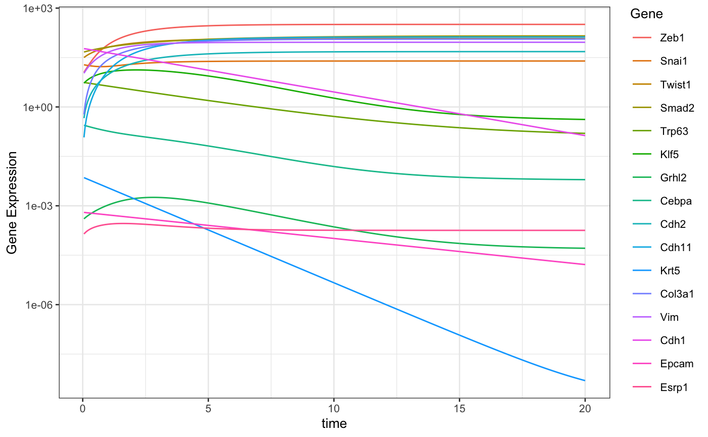
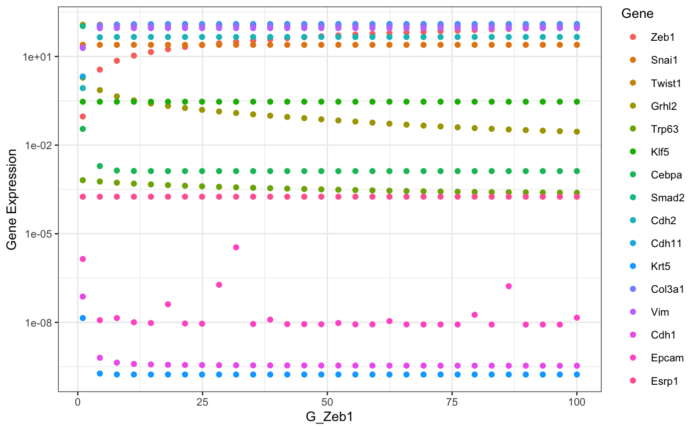

vignettes/articles/singleModelSimulations.Rmd
singleModelSimulations.RmdThis article shows how single model can be simulated using sRACIPE.
suppressWarnings(suppressPackageStartupMessages(library(sRACIPE))) suppressWarnings(suppressPackageStartupMessages(library(ggplot2))) racipe <- RacipeSE() # Construct an empty RacipeSE object data("EMT1") # Load a sample circuit sracipeCircuit(racipe) <- EMT1
## circuit file successfully loadedracipe## class: RacipeSE
## dim: 16 2000
## metadata(3): annotation nInteractions config
## assays(1): ''
## rownames(16): Zeb1 Snai1 ... Epcam Esrp1
## rowData names(16): Zeb1 Snai1 ... Epcam Esrp1
## colnames: NULL
## colData names(0):One can initialize the racipe object with experimentally determined parameters or generate a random parameter set and then modify the some or all of the parameters. As we are interested in the trajectories of a single model, we set timeSeries to TRUE.
racipe <- sracipeSimulate(racipe, timeSeries = TRUE, plots = FALSE, genIC = TRUE, genParams = TRUE, integrate = FALSE )
## Generating gene thresholds## generating thresholds for uniform distribution1...
## ====racipe## class: RacipeSE
## dim: 16 1
## metadata(3): annotation nInteractions config
## assays(0):
## rownames(16): Zeb1 Snai1 ... Epcam Esrp1
## rowData names(16): Zeb1 Snai1 ... Epcam Esrp1
## colnames: NULL
## colData names(225): G_Zeb1 G_Snai1 ... Epcam Esrp1Notice that the colData changed now and contains the randomly generated parameters and initial conditions. These can be accessed and modified using sracipeParams and sracipeIC accessors.
parameters <- sracipeParams(racipe) # Get the parameters dim(parameters)
## [1] 1 209parameters["G_Zeb1"]
## G_Zeb1
## 1 32.35886parameters[,2]
## [1] 10.32762parameters["G_Zeb1"] <- 10*parameters["G_Zeb1"] # modify parameters parameters[,2] <- 50 # modify parameters sracipeParams(racipe) <- parameters # change the parameters to modified values racipe$G_Zeb1
## [1] 323.5886## [1] 16 1ic[1]
## [1] 0.09892328ic[1] <- 10 # modify initial condition sracipeIC(racipe) <- ic # change the ic to modified values
racipe <- sracipeSimulate(racipe, timeSeries = TRUE, plots = FALSE, genIC = FALSE, genParams = FALSE, integrate = TRUE, simulationTime = 20, integrateStepSize = 0.05 )
## ====# Function to plot data sracipePlotTS <- function(plotData, ...){ plotData <- t(plotData) sexprs <- stack(as.data.frame(plotData)) colnames(sexprs) <- c("geneExp", "Gene") sexprs$time <- rep(as.numeric(rownames(plotData)), ncol(plotData)) theme_set(theme_bw(base_size = 10)) ggplot2::qplot(time, geneExp, data = sexprs, group = Gene, colour = Gene, geom = "line", ylab = "Gene Expression", xlab = "time" ) } plotData <- sracipeGetTS(racipe) p <- sracipePlotTS(plotData) p + scale_y_log10() # Use log scale

The role of parameter perturbation can be studied by slowly changing one parameter while keeping the other paramters constant. Here we will simulate a large number of models with same parameters except for the parameter being perturbed. We start with a random initial condition each time to capture multiple attractors incase the system is multistable.
selectedParameter <- "G_Zeb1" # parameter to be perturbed parMin <- 1 # Minimum value of parameter parMax <- 100 # Maximum value of parameter nModels <- 30 # Number of models. Parameter value will be uniformly sampled # nModels times from parMin to parMax. parameters <- sracipeParams(racipe) newParameters <- parameters[rep(seq_len(nrow(parameters)), nModels),] tmpValue <- seq(from = as.numeric(parMin), to = as.numeric(parMax), length.out = nModels) newParameters[selectedParameter] <- tmpValue circuit <- sracipeCircuit(racipe) rs <- sracipeSimulate(circuit, genIC = TRUE, genParams = TRUE, integrate = FALSE, numModels = nModels)
## circuit file successfully loaded## Generating gene thresholds## generating thresholds for uniform distribution1...
## ========================================sracipeParams(rs) <- newParameters # Modify parameters etc rs <- sracipeSimulate(rs, genIC = FALSE, genParams = FALSE, integrate = TRUE, numModels = nModels, simulationTime = 100)
## ========================================# Plot the steady state values library(ggplot2) sexprs <- assay(rs,1) sexprs <- reshape2::melt(t(sexprs)) colnames(sexprs) <- c("bifurParameter","Gene","geneExp") modParameter <- rep(tmpValue,times = dim(rs)[1]) sexprs$modParameter <- modParameter theme_set(theme_bw(base_size = 10)) p <- ggplot2::ggplot(sexprs) + geom_point(aes(x=modParameter,y=geneExp,color = Gene)) + xlab((selectedParameter)) + ylab("Gene Expression") p + scale_y_log10() # Use log scale
